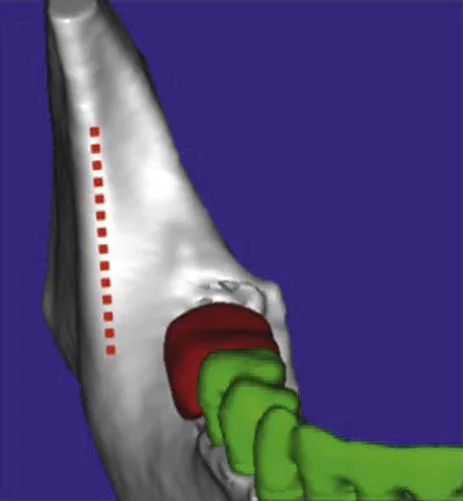
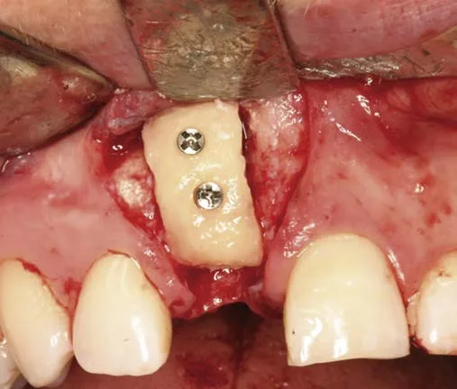

نسخه استخراجشده؛ ترجمه یا تأیید علمی انجام نشده است. وضعیت: captured
پروسیجر برداشت بلاک از راموس شبیه انجام استئوتومی ساژیتال اسپلیت راموس است. محل دهنده، استخوان کورتیکال بیرونی راموس و بدنهی خلفی مندیبل — یعنی ناحیهی شلف باکال — است که تا راموس صعودی امتداد مییابد.
برش: با تیغ، برش روی میانکرست ریج در بیمار بیدندان خلفی و از قاعدهی رتروملار پد آغاز میشود. پس از بازتاب فلپ موکوپریوستیال خلفی تمامضخامت، برش لترال به رتروملار پد و مستقیماً روی استخوان راموس صعودی تا ارتفاع صفحهی اکلوزال امتداد مییابد.
چرا لترال؟ فهرست پیامدها تلخ است: نزدیک شدن به رتروملار پد میتواند به اختلال نوروسنسوری بینجامد — پارستزی، بیحسی یا اختلال گفتار از راه آسیب به عصب لینگوال، عصب کوردا تیمپانی، و شاخهی سمپاتیک عصب پاراسمپاتیک غدهی سابمندیبولار همراه عصب لینگوال.
بازتاب: الواتور پریوستیال در سطح لترال راموس، زیر عضلهی ماستر، تا عمق ۱۵ میلیمتر پیش میرود. رتراکتورهای راموس طوری شکل گرفتهاند که ماستر را کنار بزنند و انحنایشان اجازهی آمادهسازی بلاک در حاشیهی تحتانی را بدهد.
استئوتومی — و رابطه با عصب:
• برای برش فوقانی، یک اینسرت نازک و تخت پیزوسرجری (یا فرز گرد کوچک) استخوان را از سطح لترال راموس و ابلیک خارجی به عمق ۳ تا ۶ میلیمتر سوراخ میکند — بسته به ضخامت استخوان طبق بررسی CBCT.
• سپس یک فرز فیشور میتواند نقطهها را به هم وصل کند و طرح بلاک را بسازد.
• استئوتومی فوقانی از میان استخوان کورتیکال انجام میشود و میتواند تا فاصلهی ۵ میلیمتری IAN خلفی امتداد یابد. بخش بالایی بلاک راموس معمولاً بالا و لترال به موقعیت کمپلکس عصب آلوئولار تحتانی است.
• برش عمودی خلفی هم اغلب بالا و لترال به عصب لینگوال و IAN است و بنابراین میتواند تمامضخامت در طول راموس لترال تا حاشیهی فوقانی بلاک زده شود.
دو نکتهی تکنیکی برای خارج کردن بلاک (هر دو در برداشت سیمفیز مطرح شدهاند و منطقشان برای هر بلاکی صادق است):
• برشهای استئوتومی نباید عمود بر پلیت باکال بیرونی باشند؛ باید کمی به سمت لینگوال همگرا شوند، وگرنه خارج کردن بلاک دشوار میشود.
• بلاک بزرگ معمولاً طوری طراحی میشود که در دو قطعه برداشته شود — و قطعهی دوم آسانتر است، چون چیزل استخوان با دسترسی مستقیم روی پلیت لینگوال میلغزد.
پس از خارج کردن بلاک، لبههای تیز اطراف راموس با فرز یا سوهان صاف میشوند و یک پانسمان هموستاتیک (کلاژن یا اسفنج ژلاتینی) در محل دهنده گذاشته میشود.

اصل حاکم بر بلاک در یک عبارت خلاصه میشود: «سدّ بهواسطهی حجم» (barrier by bulk) — خود تودهی بلاک نقش سدّ را بازی میکند. اما یک هشدار فوری: میکروموومنت اغلب به پیوندی ضعیف میان گرافت کورتیکال و محل گیرنده منجر میشود.
قاعدهی دو پیچ: در هر پیوند بلاک باید دو پیچ تثبیت به کار رود تا هرگونه میکروموومنت بلاک در فرآیند ترمیم حذف شود. یک پیچ اجازهی چرخش میدهد؛ دو پیچ آن را میبندد.
و اگر باز هم حرکت بود؟ پاسخ روشن است: اگر حین جراحی میکروموومنت بلاک رخ داد، بلاک باید برداشته شود و پیچها با پیچهای بلندتر یا عریضتر جایگزین گردند. یعنی حرکت، قابل تحمل نیست حتی به قیمت برداشتن دوبارهی بلاک.
آمادهسازی بستر: محل گیرنده باید طوری آماده شود که «تکان خوردن» بلاک هنگام تثبیت به حداقل برسد. یعنی سطح گیرنده باید با شکل بلاک بخواند، نه اینکه بلاک روی برجستگیها بنشیند.
پس از کانتورینگ: بلاک دهنده ۱ تا ۲ میلیمتر در استخوان میزبان فرو نشانده میشود و هیچ میکروموومنتی نباید وجود داشته باشد. بلاکها همچنین در محل بازکانتور میشوند تا لبههایشان صاف شود، چون لبهی تیز میتواند فلپ بافت نرم را سوراخ کند — همان الگویی که در پیچهای چادری هم دیدی.
پیچها:
• پیچ تثبیت ایدهآل باید پایداری بایکورتیکال نشان دهد، و اندازهگیری طول با CBCT تعیین شود.
• فشردن بلاک به میزبان: سوراخ روی بلاک کمی گشادتر از قطر پیچ مته میشود تا رزوه فقط در استخوان میزبان بگیرد و سرِ پهن و تخت پیچ، بلاک را به سمت میزبان بکشد؛ اگر رزوه در بلاک هم بگیرد، پیچ بلاک را در فاصله نگه میدارد.
• اما طراحی لگ اسکرو (lag screw) — فلز صاف در ۵ تا ۱۰ میلیمتر زیر سرِ پیچ و رزوه فقط در نیمهی اپیکال — توصیه نمیشود: استخوان تازه دور بخش صاف شکل میگیرد، درآوردن پیچ هنگام کاشت دشوار میشود و ممکن است بلاک را از میزبان لق کند.
• پیچها در زمان کاشت ایمپلنت — ۴ تا ۶ ماه پس از ریمودل شدن گرافت — برداشته میشوند.
چیدمان و پرکردن فاصلهها: بلاکها در نواحی کلیدی ایمپلنت و با دستکم دو پیچ تثبیت قرار میگیرند. سپس استخوان ذرهای بیشتر — که میتوان با رانژور یا ترفاین از سیمفیز برداشت — میان بلاکها و در هر فضای خالی میان استخوان میزبان و بلاکها گذاشته میشود.
و یک مشاهدهی مهم که تفاوت این دو را نشان میدهد: گرافتهای بلاک معمولاً جذب کمتری نسبت به گرافت ذرهای نشان میدهند.
زمانبندی: پس از ۴ تا ۶ ماه ترمیم استخوانی، ایمپلنتها معمولاً در استخوان پیوندی کاشته میشوند؛ و پس از ۴ ماه دیگر، اباتمنتها گذاشته و پروتز ساخته میشود. برای ارزیابی ترمیم، تصویربرداری — پریاپیکال، بایتوینگ، CBCT — حدود ۳ تا ۴ ماه پس از جراحی اولیه گرفته میشود.
محافظت در دورهی ترمیم: پروتز موقت باید طوری تنظیم شود که هیچ تماسی با محل گرافت نداشته باشد، و فلنج باکال هر دستگاه متحرکی برداشته شود تا میکروموومنت محدود گردد.

نوع سؤال: ساخت کلمه · 8 خانه
حروف منبع: ا · ت · و · ل · ک · ی · ر · ک